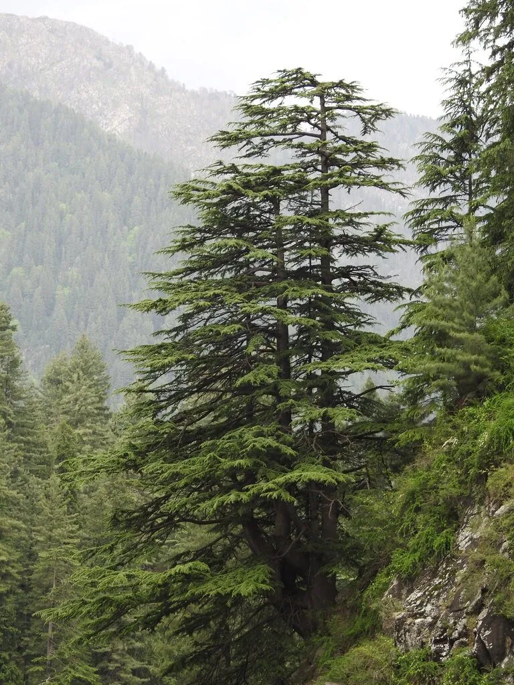

乔木 · 植物界
雪松 Cedrus deodara

树冠塔形、枝条平展下垂的常绿针叶乔木，原产喜马拉雅山区，是著名的观赏树与世界三大庭园树之一。
- 分类
- 门裸子植物门纲松柏纲目松柏目科松科属雪松属
- 栖息环境
- 原产喜马拉雅山西部海拔 1200–3300 m 的山地，喜光耐寒
- 地理分布
- 中国西藏、印度、尼泊尔、阿富汗有天然分布，中国南北各地广泛栽培
- 保护级别
- 暂无评估；中国未列入国家重点保护野生植物名录
物种志
雪松为常绿针叶乔木，高可达 50 m，树冠塔形，主干挺拔，大枝平展、小枝略下垂，树姿庄严；树皮灰褐色、呈鳞状开裂。叶片针形、坚硬，长 2.5–5 cm，在短枝上簇生、长枝上螺旋状散生，灰绿色或银灰色。雌雄同株，雄球花圆柱形、黄色，雌球花卵圆形、紫红色；球果椭圆状卵形，长 7–12 cm，成熟时红褐色，种子具翅。
雪松原产喜马拉雅山西部海拔 1200–3300 m 的山地，中国西藏、印度、尼泊尔、阿富汗有天然分布，长江流域及华北各地广泛栽培。它喜光、耐寒，适宜深厚排水良好的土壤，在暖湿地区生长迅速、树形优美，是世界著名的观赏树种，与金钱松、日本金松并称“世界三大庭园树”。木材纹理通直、耐腐，可供建筑与家具；枝叶可提取精油，常作为公园、校园与庭院的景观树。
形态与习性
- 株高可达 50 m，树冠塔形
- 花期10–11 月，球花紫色或黄色
- 球果成熟翌年 9–10 月，种子具翅
- 光照喜光，不耐庇荫
- 水分耐旱，怕积水
- 土壤深厚、排水良好的沙壤土
- 主要用途园林观赏、建筑用材、枝叶提取精油
趣味知识
- 雪松的大枝平展、小枝下垂，整棵树像一座绿色宝塔，是从远处辨认它的标志。
- 雪松与金钱松、日本金松并称“世界三大庭园树”，在欧洲园林中应用极广。
- 雪松的花期在秋末冬初，球果要到第二年秋天才成熟。
- 黎巴嫩国旗上的雪松是同属的黎巴嫩雪松，与常见的喜马拉雅雪松并非同种。